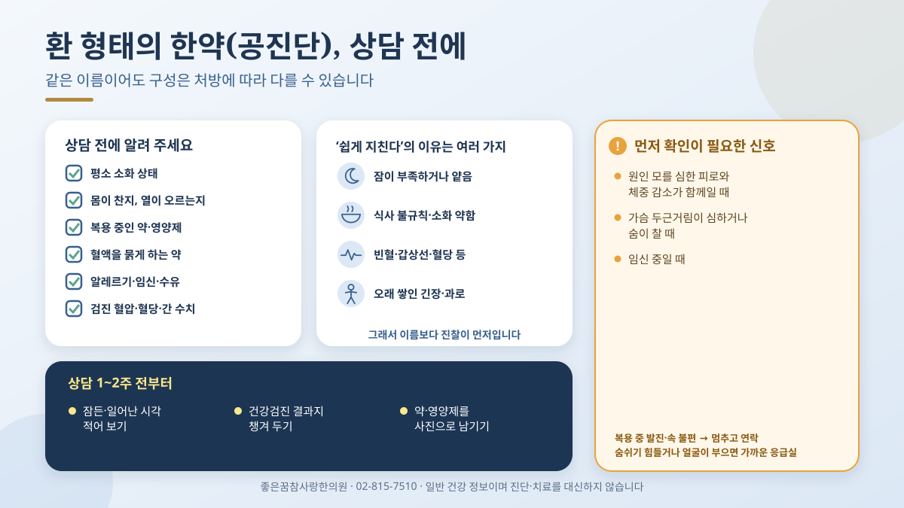

이종호 한의사 감수좋은꿈참사랑한의원 대표원장 (한의사 면허번호 19769)발행 2026-11-23 · 수정 2026-11-25
이 글의 차례
상담 전에는 복용 중인 약과 영양제, 알레르기, 임신·수유 여부, 평소 소화와 열감, 최근 건강검진 소견을 알려 주시면 됩니다. 공진단이 필요한지는 이름이나 주변의 권유보다 체질과 지금 몸 상태를 먼저 살핀 뒤 함께 정합니다. 공진단은 이름이 널리 알려진 전통 처방으로, 약재를 가루 내어 꿀 등으로 반죽해 환(丸) 모양으로 만듭니다.
이름은 같아도 구성은 한의원과 처방에 따라 다를 수 있습니다. 그래서 이름보다 지금 내 몸 상태에 맞는지를 먼저 살피는 것이 중요합니다.
왜 이름보다 몸 상태를 먼저 볼까요
공진단을 찾는 분들은 대개 "기운이 없다", "쉽게 지친다"는 이야기를 하십니다. 이런 피로는 이유가 여러 가지입니다.
- 잠이 부족하거나 얕은 경우
- 식사가 불규칙하고 소화가 약한 경우
- 빈혈, 갑상선, 혈당처럼 검사로 확인할 몸의 변화가 있는 경우
- 오래 쌓인 긴장과 과로
또 같은 처방이라도 몸에 따라 받아들이는 정도가 다릅니다. 평소 열이 많아 얼굴이 잘 달아오르는 분, 소화가 약해 쉽게 더부룩한 분, 감기 기운으로 열이 나는 중인 분은 처방 여부나 시기를 더 신중하게 살핍니다. 원인에 따라 살펴야 할 것이 달라, 이름이 알려진 처방이라도 진찰을 먼저 합니다.
먼저 이렇게 여쭙니다
- 피로가 언제부터, 어떤 일 뒤에 시작되었나요? 쉬면 조금 덜한가요?
- 잠은 몇 시간쯤 주무시고, 자다가 자주 깨시나요?
- 평소 소화 상태는 어떤가요? (더부룩함, 설사, 변비)
- 열이 오르거나 몸이 찬 정도는 어떤가요?
- 복용 중인 약과 영양제가 있나요? 특히 혈액을 묽게 하는 약이 있나요?
- 알레르기나 임신·수유 여부, 건강검진의 혈압·혈당·간 수치는 어떤가요?
알아 두면 좋은 점
- 같은 이름이어도 약재 구성이 다를 수 있으니, 어떤 약재가 들어가는지 설명을 들을 수 있는지 확인해 보세요.
- 누구에게나 같은 약이 맞는 것은 아니며, 처방 여부는 진찰 후 정합니다.
- 환은 보관과 휴대가 비교적 쉽지만, 복용법과 보관법은 처방한 한의사의 안내를 따라 주세요.
- 예전에 환 형태의 한약을 드셔 본 적이 있다면 그때 속이 편했는지, 열감이 있었는지 알려 주세요.
- 처음부터 길게 정하기보다 일정 기간 드신 뒤 몸의 반응을 보고 이어 갈지 상의하는 경우가 많습니다.
상황별 예시
- 예를 들어 야근이 잦아 늘 피곤한 직장인이라면, 공진단 이야기에 앞서 잠든 시각과 끼니, 커피 양부터 여쭙습니다. 잠이 네다섯 시간에 머무는 생활이라면 잠의 리듬을 함께 정리하는 일을 먼저 상의할 수 있습니다.
- 예를 들어 시험을 앞둔 수험생 자녀를 위해 보호자가 상담을 원하시는 경우라면, 아이의 식사와 잠, 소화 상태, 복용 중인 약을 함께 여쭙고 진찰한 뒤 필요 여부를 정합니다. 시험 직전에 처음 드시기보다 몸의 반응을 살필 여유를 두고 상담하시길 권합니다.
- 예를 들어 혈압약이나 혈액을 묽게 하는 약을 드시는 어르신이라면, 약 이름과 용량을 확인하고 다니시는 병원 진료 일정도 함께 여쭙습니다. 수술이나 시술이 예정되어 있다면 미리 알려 주세요.
스스로 점검해 보세요
- 피로가 몇 주째 이어지는데 이유를 잘 모르겠다
- 하루 잠이 여섯 시간이 안 되거나 자다가 자주 깬다
- 끼니를 자주 거르거나 식사 뒤 더부룩하다
- 얼굴이 잘 달아오르거나 손발이 유난히 차다
- 건강검진에서 혈압·혈당·간 수치에 대해 들은 이야기가 있다
- 복용 중인 양약이나 영양제가 여러 가지다
- 예전에 한약을 드시고 열감이나 속 불편이 있었다
해당하는 항목은 진료 때 말씀해 주세요. 공진단이 필요한지, 생활 조정이 먼저인지 정하는 바탕이 됩니다.
일상에서 먼저 해 볼 수 있는 것
- 상담 전 1~2주 동안 잠든 시각과 일어난 시각 적어 보기
- 식사를 거르지 않고 일정한 시각에 먹어 보기
- 최근 건강검진 결과지를 챙겨 두기
- 복용 중인 약과 영양제를 사진으로 남겨 두기
- 저녁 늦은 시간 카페인과 술 줄여 보기
- 피곤한 날과 괜찮은 날의 차이를 한 줄씩 적어 보기
얼마나 지켜보고 언제 상담할까요
잠과 식사를 2~3주 정도 바로잡아 보았는데도 피로가 이어지거나 일상이 버거울 만큼 지친다면 상담을 받아 보세요. 반면 체중이 이유 없이 빠지거나 숨이 차고 가슴이 두근거리는 일이 잦다면 지켜보지 말고 내과 진료와 검사를 먼저 받으시길 권합니다.
공진단을 드시기 시작한 뒤에는 첫 며칠 동안 속이 편한지, 얼굴이 달아오르거나 잠이 얕아지지 않는지 적어 두세요. 불편이 사흘 넘게 이어지면 다음 진료를 기다리지 말고 전화로 알려 주세요.
한의원에서 함께 살필 수 있는 경우
- 쉽게 지치고 쉬어도 피로가 오래간다고 느끼는 경우
- 잠과 소화가 함께 흔들리는 경우
- 환 형태의 한약이 내 몸에 맞는지 상담받고 싶은 경우
좋은꿈참사랑한의원에서는 먼저 피로의 모습과 생활을 충분히 듣고, 진맥·설진·복진으로 몸 상태를 살핀 뒤 처방이 필요한지, 필요하다면 어떤 형태와 구성이 맞는지 정합니다. 복용 중에는 다음 진료에서 몸의 반응을 이어서 살핍니다.
첫 방문에는 피로가 시작된 시기와 하루 생활, 복용 중인 약과 영양제를 먼저 여쭙고 맥부터 짚어 봅니다. 필요하다고 판단될 때 혀와 배를 살피고, 건강검진 결과지가 있으면 혈압·혈당·간 수치를 함께 봅니다. 혈액 검사가 필요해 보이면 안내해 드리며, 이렇게 살핀 뒤 공진단이 필요한지, 탕약이나 생활 조정이 먼저인지 설명드립니다.
처방하게 되면 복용 방법과 다음 진료 시기를 함께 정합니다.
이렇게 기록해 오시면 상담이 쉬워집니다
- 피로가 심한 시간대와 그 무렵의 생활
- 1~2주 동안의 잠과 식사, 대변 상태
- 복용 중인 약과 영양제 이름
- 건강검진에서 들은 이상 소견
- 예전에 드신 한약의 형태와 그때의 반응
이런 증상은 먼저 확인이 필요합니다
- 원인 모를 심한 피로와 체중 감소가 함께 있는 경우
- 가슴 두근거림이 심하거나 숨이 차는 경우
- 열이 계속되거나 밤에 땀을 많이 흘리는 경우
- 임신 중인 경우
복용 중 속이 불편하거나 발진이 생기면 복용을 멈추고 연락해 주세요. 숨쉬기 힘들거나 얼굴이 부으면 바로 응급실을 이용하세요. 복용 중인 다른 약은 처방한 의사와 상의 없이 줄이거나 끊지 않습니다.
함께 읽으면 좋은 글
- 환(丸)과 탕약은 무엇이 다르고 어떻게 고르나요?
- 녹용을 한약 재료로 상담받을 때 무엇을 확인하나요?
- 한약 상담을 받을 때 무엇을 알려 주면 좋을까요?

여쭙는 것
- 피로가 언제부터, 어떤 일 뒤에 시작되었나요? 쉬면 조금 덜한가요?
- 잠은 몇 시간쯤 주무시고, 자다가 자주 깨시나요?
- 평소 소화 상태는 어떤가요? (더부룩함, 설사, 변비)
생활에서 해 볼 것
- 상담 전 1~2주 동안 잠든 시각과 일어난 시각 적어 보기
- 식사를 거르지 않고 일정한 시각에 먹어 보기
- 최근 건강검진 결과지를 챙겨 두기
한의원에서 함께 살필 것
- 쉽게 지치고 쉬어도 피로가 오래간다고 느끼는 경우
- 잠과 소화가 함께 흔들리는 경우
- 환 형태의 한약이 내 몸에 맞는지 상담받고 싶은 경우
먼저 확인이 필요한 신호
- 원인 모를 심한 피로와 체중 감소가 함께 있는 경우
- 가슴 두근거림이 심하거나 숨이 차는 경우
- 열이 계속되거나 밤에 땀을 많이 흘리는 경우
한눈에 보는 표
| 구분 | 핵심 |
|---|---|
| 여쭙는 것 | 피로가 언제부터, 어떤 일 뒤에 시작되었나요? 쉬면 조금 덜한가요? 잠은 몇 시간쯤 주무시고, 자다가 자주 깨시나요? |
| 생활에서 해 볼 것 | 상담 전 1~2주 동안 잠든 시각과 일어난 시각 적어 보기 식사를 거르지 않고 일정한 시각에 먹어 보기 |
| 한의원에서 함께 살필 것 | 쉽게 지치고 쉬어도 피로가 오래간다고 느끼는 경우 잠과 소화가 함께 흔들리는 경우 |
| 먼저 확인이 필요한 신호 | 원인 모를 심한 피로와 체중 감소가 함께 있는 경우 가슴 두근거림이 심하거나 숨이 차는 경우 |
자주 묻는 질문
누구나 먹어도 되나요?
그렇지 않습니다. 체질과 지금 몸 상태, 복용 중인 약을 먼저 살핀 뒤 필요 여부를 함께 정합니다.
비용은 어떻게 되나요?
처방과 구성에 따라 달라 진료 후 상담에서 안내해 드립니다. 미리 궁금하시면 방문 전 전화로 확인해 주세요.
복용 중인 약이 있어도 상담받을 수 있나요?
복용 중인 약과 영양제를 모두 알려 주세요. 약은 처방한 의사와 상의 없이 줄이거나 끊지 않습니다.
공진단을 먹으면 잠을 좀 줄여도 될까요?
한약이 잠을 대신하지는 않습니다. 잠과 식사 리듬을 함께 돌보는 것이 먼저이며, 상담 때 생활을 함께 살핍니다.
좋은꿈참사랑한의원은 재진 때 지난번 이야기부터 이어서 여쭙니다. 진료시간과 예약은 오시는 길에서 확인하세요.
어디서 상담받을 수 있나요?
좋은꿈참사랑한의원은 서울 동작구 만양로2길 2 신성빌딩 3층·5층(서울 동작구 상도동, 7호선 상도역 3번 출구 근처)에 있습니다. 한의사 3명(이종호 대표원장, 조영기 수석진료원장, 정원영 진료원장)이 진료합니다. 진료시간은 평일 09:30~20:00(점심 13:00~14:00), 토·일·공휴일 09:30~15:00이며, 방문 전 전화로 확인을 권합니다. 예약은 네이버 예약, 카카오톡 상담, 전화 02-815-7510로 받습니다.
이 글은 일반적인 건강 정보이며 개인의 진단이나 치료를 대신하지 않습니다. 증상이 있거나 복용 중인 약이 있다면 진료를 통해 확인하세요. 치료 효과는 개인마다 다를 수 있습니다.
작성 기준: 일반적으로 알려져 있는 건강 정보를 참고해 정리했습니다(대표원장 감수). 증상 기록은 1~2주 동안 하루 1회, 비슷한 시간에 적어 오시면 지난 상태와 비교하기 쉽습니다.